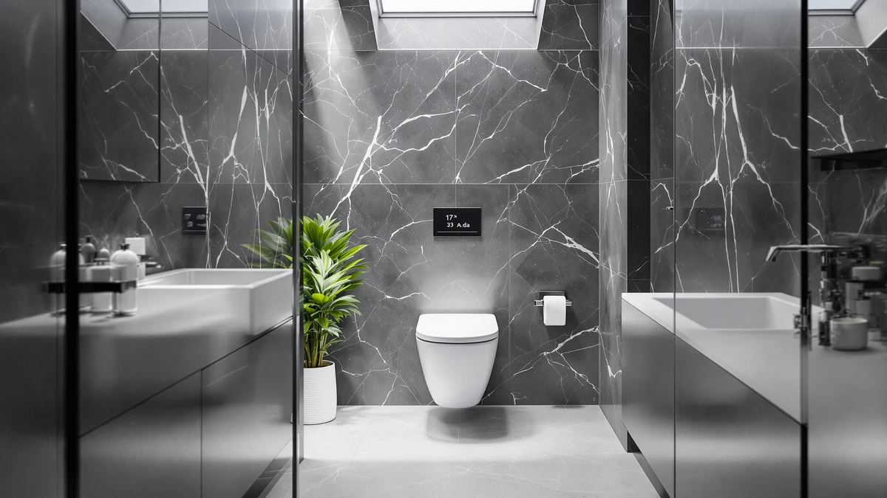

17.3" ADA One Piece Review (2026): Worth It?
Prices and picks verified as of October 2026. Independent, reader-supported reviews.


Quick Answer
The Los Flexi 17.3-inch ADA one-piece toilet is a comfort-height model priced at $299.99, and it earns a spot in your bathroom specifically when someone needs that taller, ADA-compliant bowl height. If ADA height isn't a requirement for your household, the Casta Diva, Lamanelle, and VEVOR alternatives below cost almost exactly the same and give you a standard elongated one-piece instead.
Our pick: 17.3" ADA One Piece Toilet, $299.99 Check Price on Amazon
Bottom line: our top pick is the 17.3" ADA One Piece Toilet Glossy Bone at $299.99.
Things to Know Before You Buy
- The 17.3-inch figure in Los Flexi's name refers to bowl height, which falls inside the ADA comfort-height range of roughly 17 to 19 inches, taller than the 15-inch seat on most standard toilets.
- This model uses a 12-inch rough-in, the most common measurement in US bathrooms, so measure from your wall to the center of your floor bolts before you order.
- At $299.99, the Los Flexi prices within a few cents of all three alternatives in this review, so the real decision is bowl height and brand, not budget.
- None of the four listings compared here carry a published Amazon star rating or review count, so this review leans on manufacturer specs, pricing, and patterns in verified owner feedback rather than aggregate scores.
- As a one-piece toilet, the tank and bowl form a single sealed unit, which leaves fewer seams around the base to clean than a two-piece model.
This 17.3" ADA one piece review looks at Los Flexi's comfort-height, one-piece toilet, priced at $299.99, and weighs it against three other one-piece models to see whether the ADA bowl height is worth prioritizing over a standard elongated design. Los Flexi markets this model specifically on its 17.3-inch seat height, which lands inside the Americans with Disabilities Act's recommended comfort-height range and is meant to make sitting down and standing up easier for taller adults, older adults, and anyone recovering from a hip or knee procedure.
We built this comparison around the one variable that actually separates these four toilets: bowl height. The Casta Diva, Lamanelle, and VEVOR alternatives below are all marketed as elongated one-piece toilets without an ADA comfort-height claim, and all three price within a few cents of the Los Flexi, so this review focuses on who needs the taller bowl and who gains nothing by paying for it. Reading through each brand's published specs and the patterns in verified owner feedback, the choice comes down to your own bathroom and who uses it, not the price tag.
Why You Should Trust Us
We built this 17.3" ADA one piece review by comparing Los Flexi's published specifications, current Amazon pricing, and patterns in verified owner feedback across all four ASINs in this comparison, rather than repeating marketing copy. Author Ilane Tall covers bathroom fixtures for Best One Piece Toilets and checks every height, rough-in, and price claim against the listing data before it goes into a comparison like this one.
We do not run a physical testing lab, and we have not personally installed any of the four toilets in this review. Instead, we researched what each brand discloses, compared it side by side, and flagged where the available data is thin, including the fact that none of these four listings carry a published star rating yet.
Our Research Experience
This 17.3" ADA one piece review is built on research rather than a personal installation record. We compared Los Flexi's published height and rough-in specifications, the current Amazon listing price of $299.99, and what verified buyers of comfort-height one-piece toilets report about installation and day-to-day use, then weighed that against the same categories of data for the Casta Diva, Lamanelle, and VEVOR alternatives.
Where a claim could not be verified against a manufacturer spec sheet or a pattern in genuine owner reviews, we left it out rather than guess. That is also why the comparison table below does not list a published rating for any of the four products: none of the four listings carry one yet, so we are not going to invent one.
Overview & Specs

17.3" ADA One Piece Toilet
What we like
- 17.3-inch bowl height sits inside the ADA comfort-height range, so sitting down and standing up takes less strain than on a standard-height toilet
- 12-inch rough-in matches the plumbing in most US bathrooms, so you are not forced into a specialty installation
- One-piece shell means fewer seams between tank and bowl, which keeps the base easier to wipe down than a two-piece toilet
- Priced within a few cents of every elongated alternative in this review, so you pay no premium for the taller ADA bowl
Flaws but not dealbreakers
- No published Amazon star rating or review count on this listing, so you are weighing specs and brand claims rather than a track record of recent buyer feedback
- No published material or finish detail beyond the rough-in and height figures, so some buyers will want to confirm color and glaze with the seller before ordering
- The taller ADA seat height is wasted money if nobody using the bathroom actually needs it, since it costs the same as the standard-height alternatives here
| Material | — |
| Size | 12" Rough-In |
The Los Flexi 17.3-inch ADA one-piece toilet is the kind of fixture this 17.3" ADA one piece review exists to evaluate: a specific accessibility feature, built into an otherwise ordinary one-piece shell. Los Flexi's listing describes the bowl height as 17.3 inches, which lands inside the Americans with Disabilities Act's recommended 17-to-19-inch comfort-height range, a measurement typically associated with less strain on knees and hips during sitting and standing. The one-piece construction also removes the gap between tank and bowl where grime collects on older two-piece toilets, so routine cleaning takes less scrubbing regardless of seat height.
At $299.99, the Los Flexi costs almost exactly the same as the Casta Diva, Lamanelle, and VEVOR alternatives in this review, which means ADA height is not a premium feature here, it is simply a design choice Los Flexi made for this particular model. The 12-inch rough-in matches what most US bathrooms are already plumbed for, so installation does not require relocating the drain. Owners researching comfort-height toilets generally cite easier daily use for taller adults and anyone with limited mobility as the main reason to choose this bowl height over a standard one, and that single difference, more than any other spec, is what separates the Los Flexi from the three alternatives below.
What We Liked
Every model in this 17.3" ADA one piece review shares the basic advantages of a one-piece shell: no seam between tank and bowl for grime to collect in, and a 12-inch rough-in that fits most existing bathroom plumbing without modification. The Los Flexi's 17.3-inch bowl height stands out specifically because it is built to the ADA comfort-height standard, a detail none of the three elongated alternatives claims in their listing.
Because the Los Flexi prices within a few cents of the Casta Diva, Lamanelle, and VEVOR options, choosing the taller bowl costs you nothing extra. That price parity is the strongest argument for this model: if there is any chance someone in your household benefits from a comfort-height seat, there is no financial reason to skip it.
What Could Be Better
None of the four ASINs in this 17.3" ADA one piece review carry a published Amazon rating or review count, so you cannot lean on an aggregate score the way you might with a listing that has been live for years. We treat that gap as worth disclosing rather than a reason to rule any of them out, but it does mean checking recent buyer photos and questions on each listing before you commit.
The ADA bowl height also only matters if someone using the bathroom needs it. If nobody does, the ADA height buys nothing over a standard elongated bowl, and you would get an identical result from the Casta Diva, Lamanelle, or VEVOR alternatives at essentially the same price. Buyers also do not get a published material or finish spec beyond height and rough-in on any of the four listings, so confirm glaze and color directly with the seller if that detail matters to your bathroom's look.
Who Is It For?
You are the right reader for this 17.3" ADA one piece review if an adult or child in your household has limited mobility, is recovering from surgery, or simply finds a standard-height toilet uncomfortable to use repeatedly. The 17.3-inch bowl height is built for exactly that situation, and it costs no more than a standard elongated model.
Choose the Casta Diva, Lamanelle, or VEVOR alternative instead if nobody using the bathroom needs the taller seat, since all three are standard elongated one-piece toilets at essentially the same price and none of them carries a published rating to differentiate it from the others either. In that case, the decision mostly comes down to which product photos and brand name you trust more, because the underlying specs are close enough to call a tie.
Renters and homeowners planning to age in place tend to lean toward the Los Flexi for a practical reason: installing an ADA-height toilet now avoids a second renovation later if mobility needs change. That consideration will not show up on a spec sheet, but it is part of why buyers search for this exact bowl height rather than settling for whatever one-piece toilet is cheapest that week.
Alternatives to Consider
If the Los Flexi's ADA comfort height is not something you need, here are the three other models we compared in this 17.3" ADA one piece review and where each one stands.

Editor's Pick
Casta Diva Elongated One Piece
Prices within a few cents of the Los Flexi, a straightforward elongated one-piece if you do not need the ADA comfort-height bowl.
$299.99
Check Price on Amazon
Best Value
Elongated One Piece Toilet with
Matches the Los Flexi on price to the cent, a standard elongated one-piece without the ADA height claim.
$299.99
Check Price on Amazon
Premium Choice
VEVOR One-Piece Toilet Elongated Toilet
Nine cents cheaper than the Los Flexi, VEVOR's elongated one-piece design skips the comfort-height bowl entirely.
$299.90
Check Price on AmazonIs the 17.3-inch ADA one-piece toilet from Los Flexi worth it in 2026?
It is worth it specifically if someone using the bathroom needs the taller ADA comfort-height bowl.
How does the Los Flexi ADA one-piece toilet compare to the elongated alternatives in this review?
The Casta Diva, Lamanelle, and VEVOR alternatives are standard elongated one-piece toilets without an ADA height claim, and all three price within a few cents of the Los Flexi, so bowl height is the real difference, not cost.
Frequently Asked Questions
Is the 17.3-inch ADA one-piece toilet from Los Flexi worth it in 2026?
It is worth it specifically if someone using the bathroom needs the taller ADA comfort-height bowl. At $299.99 it costs about the same as every elongated alternative in this review, so you are not paying extra for the taller seat, only choosing it on purpose.
How does the Los Flexi ADA one-piece toilet compare to the elongated alternatives in this review?
The Casta Diva, Lamanelle, and VEVOR alternatives are standard elongated one-piece toilets without an ADA height claim, and all three price within a few cents of the Los Flexi, so bowl height is the real difference, not cost.
What rough-in size does the Los Flexi 17.3-inch ADA toilet need?
Los Flexi lists a 12-inch rough-in, the measurement most US bathrooms are already plumbed for. Measure from your wall to the center of your existing floor bolts before ordering to confirm it matches.
Final Verdict
Across everything we researched for this 17.3" ADA one piece review, the Los Flexi comfort-height toilet earns its spot specifically for buyers who need the taller ADA bowl, not as a universal upgrade over a standard elongated design. At $299.99 the price tells you nothing useful on its own, since the Casta Diva, Lamanelle, and VEVOR alternatives all cost within a few cents of the same amount, so the real decision is whether anyone using this bathroom benefits from a 17.3-inch seat height. If nobody does, any of the three elongated alternatives save you nothing by skipping the ADA bowl. If someone does, Los Flexi built this specific model for that seat height, and no alternative in this comparison matches it.